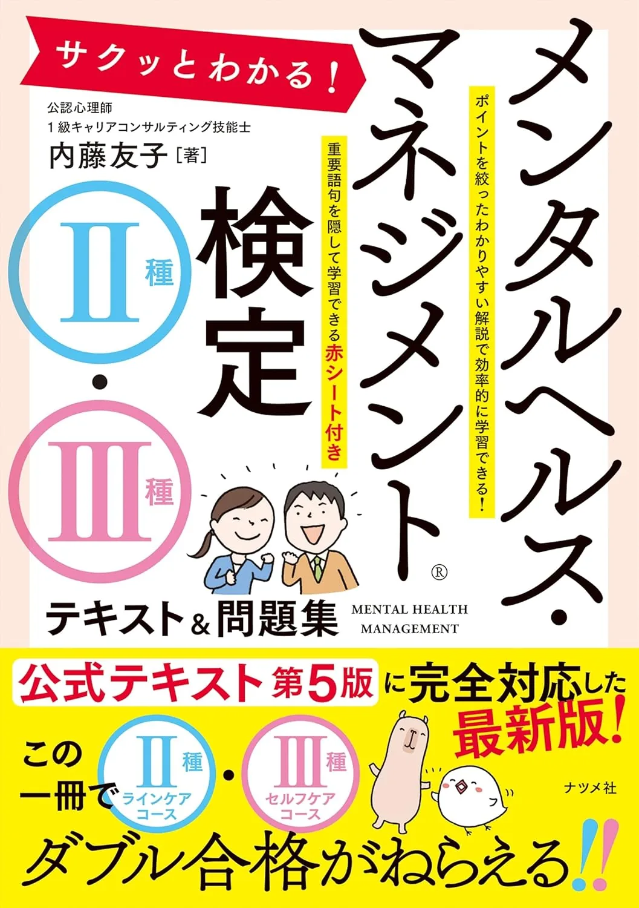

メンタルヘルス・マネジメント検定II種のおすすめテキスト3選【2026年度版·独学】
独学でII種（ラインケア）に挑むなら、最初のテキスト選びが学習効率を大きく左右します。出題の基準となるのは公式テキスト第6版ですが、初めて学ぶ1周目には、解説の読みやすいTACやナツメ社のテキスト&問題集も心強い味方になります。本記事では、公式第6版・スッキリわかる第2版・サクッとわかるの3冊を、章立て・演習量・予算という観点で比較します。
この記事の信頼性について
| 執筆 | メンタルヘルス二種マスター編集部（資格学習サイトの編集チーム） |
|---|---|
| 確認 | 公式情報確認担当（公開前に一次情報との照合を行う担当者） |
| 事実確認日 | 2026-06-16 |
| 主な参照元 |
16/14（日）：テキスト選びの3基準（正本·7領域·70点）
| II種ラインケアのテキストは、出題正本との章立て一致が最優先です。選ぶ前に試験のご紹介（公式）で50問120分·70点以上を確認し、次の3点で比較してください。たとえば6/12開始で週8時間なら、平日60分テキスト+日曜3時間演習が続きやすい配分です。 | 観点 | 確認内容 |
|---|---|---|
| 正本性 | 公式テキスト第6版と7領域の章対応 | |
| 演習接続 | テキスト第1周後におすすめ問題集3選へつながるか | |
| 予算 | 受験料7,480円とは別枠で段階投入できるか | 3冊同時購入は避け、要項確認と演習計測のあとに1冊決定してください。 |
おすすめテキスト3選（比較）
価格・在庫・版情報は執筆時点（2026-06-12）のAmazon税込参考です。購入前に必ず販売ページでご確認ください。
| 順位 | 商品名 | 価格（税込参考） | ページ数 | 向いている人 |
|---|---|---|---|---|
| 1 | メンタルヘルス・マネジメント検定試験公式テキスト Ⅱ種 ラインケアコース〔第6版〕 | ¥3,630 | 320 | 出題範囲の正本に沿って7領域を体系的に学びたい管理監督者 |
| 2 | スッキリわかる メンタルヘルス・マネジメント検定試験Ⅱ種 テキスト&問題集 第2版 | ¥2,200 | 272 | イラスト解説で短時間に第1周したい初学者 |
| 3 | サクッとわかる! メンタルヘルス・マネジメント検定Ⅱ種・Ⅲ種テキスト&問題集 | ¥2,200 | 256 | II種とIII種をまとめて押さえたい人・コンパクトに始めたい人 |

メンタルヘルス・マネジメント検定試験公式テキスト Ⅱ種 ラインケアコース〔第6版〕
- 検定試験の出題正本（第41回公開試験以降は第6版準拠）
- 7領域の章立てが試験範囲と一致
- 他社テキストと併用する際の照合基準になる

スッキリわかる メンタルヘルス・マネジメント検定試験Ⅱ種 テキスト&問題集 第2版
- テキストと演習問題を1冊で回せる
- TAC系の解説で初学者向け
- 公式テキスト読了後の理解確認にも使える

サクッとわかる! メンタルヘルス・マネジメント検定Ⅱ種・Ⅲ種テキスト&問題集
- II種・III種を1冊でカバー
- 要点整理と問題演習が一体
- 独学の第1冊候補として比較しやすい
23冊の比較表（価格·判型·向き不向き）
| 比較表は「安い順」ではなく、正本との位置づけと学習スタイルで選んでください。執筆時点（2026-06-12）のAmazon税込参考です。購入前に販売ページで再確認が必要です。 | 順位 | 書名 | 税込参考 | 向いている人 |
|---|---|---|---|---|
| 1 | 公式テキスト第6版 | 3,630円 | 正本で7領域を体系的に学びたい人 | |
| 2 | TACスッキリ第2版 | 2,200円 | イラスト解説で短時間に第1周したい人 | |
| 3 | サクッとわかるII·III | 2,200円 | II·IIIを1冊で押さえたい人 | いずれも最終的には公式第6版との照合が必要です。TACとナツメ社を混在させず、1冊80％使い切ってから次へ進むのが定番です。 |
3公式テキスト第6版：出題正本·7領域の基準冊
「メンタルヘルス・マネジメント検定試験公式テキスト Ⅱ種 ラインケアコース〔第6版〕」（大阪商工会議所·中央経済社·A5判·Amazon税込参考3,630円）は、第41回公開試験以降の出題正本です。 向いている人：管理監督者として7領域を条文ベースで学びたい人、他社テキストの記述を照合する基準が欲しい人、過去問題集2025年度版と章立てを揃えたい人。たとえば7/5（土）購入→8月末第1周40％→9月から過去問集、の流れと相性がよいです。 TAC·サクッとわかるとの使い分け：初学者が第1周の全体像を掴むならTAC、本番直前の正本確認は公式第6版、が役割分担の定番です。
4TACスッキリ第2版：テキスト&問題集一体·2,200円
「スッキリわかる メンタルヘルス・マネジメント検定試験Ⅱ種 テキスト&問題集 第2版」（TAC出版·272頁·Amazon税込参考2,200円）は、イラスト解説と章末演習が1冊にまとまった効率重視型です。
- 向いている人：メンタルヘルス用語に初めて触れる管理職
- 通勤30分×週5で第1周を進めたい人
- 予算を2
- 000円台に抑えつつ演習量も確保したい人
6/21（日）の演習10問で60％未満が2領域以上なら、7月からスッキリで第1周→8月に公式第6版へ移行する判断も有効です。 公式第6版との使い分け：スッキリは理解の補助、合格の正本は公式第6版、と役割を分けて二重購入を同時に開かないでください。
5サクッとわかるII·III：コンパクト1冊·2,200円
サクッとわかる! メンタルヘルス・マネジメント検定Ⅱ種·Ⅲ種テキスト&問題集（ナツメ社·256頁·Amazon税込参考2,200円）は、II種とIII種を1冊で学べるコンパクト教材です。
- 向いている人：II種合格後にIII種も視野に入れたい人
- 要点整理と模擬試験を短時間で回したい人
- TAC以外の第3の選択肢を探している人
II種だけを目指す場合は、章立ての深さでは公式第6版かTACを優先してください。 TACとの使い分け：イラスト量と演習の厚みを重視するならTAC、II·III横断のコンパクトさを重視するならサクッとわかる、が目安です。
6購入順序·問題集·50問通し（6〜9月例）
| テキストは「要項確認→演習計測→1冊決定→問題集追加」の順で段階投入します。6/12開始·試験9/6·週8時間の例です。 | 時期 | 購入·学習 | 演習 |
|---|---|---|---|
| 6月 | 要項·3冊比較 | 6/21演習10問·7領域正答率1行 | |
| 7月 | 7/5テキスト1冊·8/2問題集1冊 | 週15問·日曜30分記録 | |
| 8月 | 公式第6版第1周 | 弱点領域20問/週 | |
| 9/6（土）前 | — | 50問120分·70点以上を目標 | 問題集はおすすめ問題集3選から過去問2025年度版を優先。試験2週前からは新規購入を止め解き直しに集中してください。 |
7次に読む：独学計画と問題集比較
テキスト1冊が決まったら、次の記事へ進んでください。 ・独学の立ち上げ → 独学の始め方
・章立て照合 → テキストの選び方
・50問形式 → 試験形式
・演習1冊 → おすすめ問題集3選
収益リンクは比較表のAmazonボタンと本文下の関連リンクに集約しています。
8よくある質問
公式テキストは必須ですか？
初学者は何を最初に買えばよいですか？
TACとサクッとわかるはどちらがよいですか？
記事の基本情報
| ジャンル | 独学対策 |
|---|---|
| タグ | 独学 / 教材 / 学習計画 |
公式情報の確認
公式情報の確認：メンタルヘルス・マネジメント検定II種の最新情報は、試験のご紹介（公式）などの公式情報を必ず確認してください。本人に割り当てられた試験会場は受験票の表記が正本です。